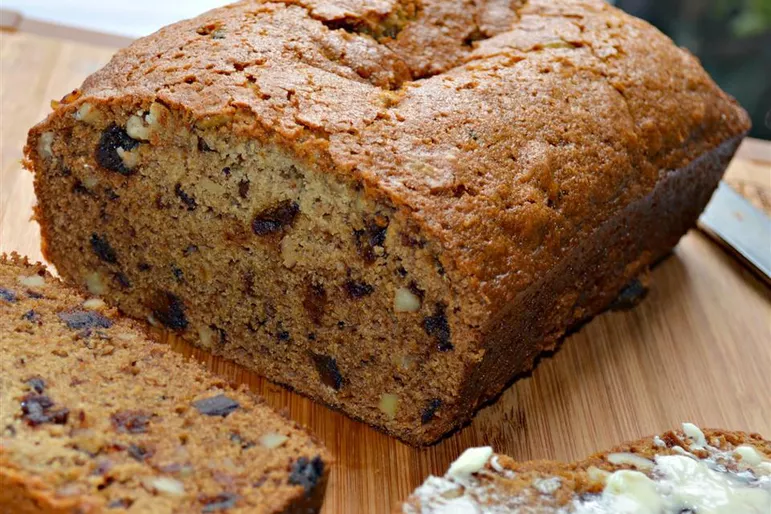

Bread

Homemade Artisan Bread
Bread is a staple food enjoyed in various forms and flavors across cultures worldwide. It is typically made from flour, water, yeast, and salt, with additional ingredients such as sugar, oil, and seeds for added flavor and texture. Bread can range from simple loaves of white or whole wheat bread to artisanal sourdough bread with a crusty exterior and chewy interior. It serves as a versatile food item, suitable for breakfast, lunch, dinner, and snacks.
Ingredients:
- All-purpose flour
- Instant yeast
- Salt
- Warm water
- Olive oil
- Cornmeal (for dusting)
Steps:
- In a large mixing bowl, combine flour, instant yeast, and salt.
- Add warm water and olive oil to the dry ingredients. Mix until a shaggy dough forms.
- Cover the bowl with a damp cloth and let the dough rise in a warm place until doubled in size, about 1-2 hours.
- Preheat your oven and a Dutch oven or baking stone to a high temperature (usually around 450°F or 230°C).
- Shape the risen dough into a ball or desired shape on a floured surface. Dust a baking sheet or peel with cornmeal and place the dough on it.
- Score the top of the dough with a sharp knife or blade to allow for expansion during baking.
- Carefully transfer the dough to the preheated Dutch oven or baking stone. Cover with the lid (if using a Dutch oven).
- Bake covered for about 20-30 minutes, then uncover and bake for an additional 10-15 minutes or until the bread is golden brown and sounds hollow when tapped on the bottom.
- Remove the bread from the oven and let it cool on a wire rack before slicing.
- Enjoy your freshly baked homemade artisan bread!